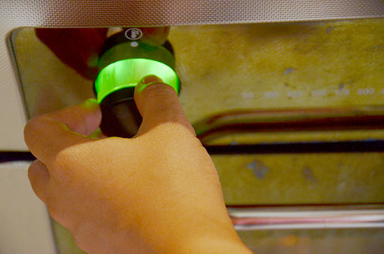
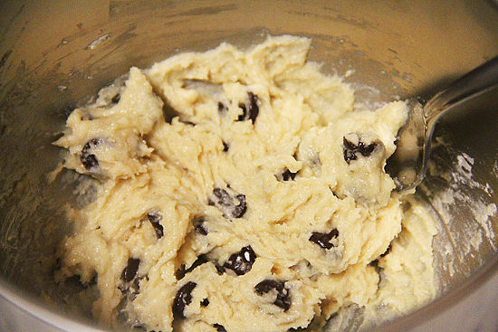
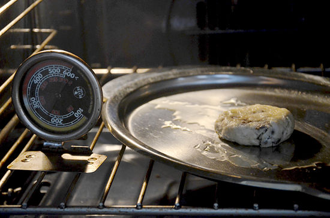
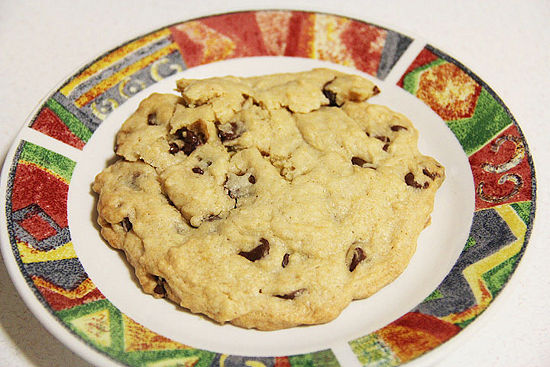

How to Make a Single Chocolate Chip Cookie
Have you ever thought to yourself, "I have a craving for cookies, but I don't want to make an entire batch?" This amazing and easy recipe will save you time and smash that hungry feeling. This article will show you how to make a single chocolate chip cookie.
Ingredients
- 1 tablespoon white granulated sugar
- 1 tablespoon brown sugar
- 1 tablespoon butter
- 1-2 tablespoons chocolate chips
- 1 tablespoon water
- 1/8 teaspoon vanilla extract (essence)
- Pinch of salt
- Pinch of baking soda
- 4 tablespoons flour
Steps
- Preheat the oven to 350°F or 180°C. 
- Measure all the ingredients in a small bowl. Mix and mash thoroughly with a fork. It's easier if the butter is slightly softened rather than using a hard-brick. 
- Add the mixture to the center of a pre-greased cookie sheet. To make it easier to bake evenly, smooth the mixture out as a thin layer.
- Bake for 15-17 minutes. Bake for an additional 1-2 minutes if the cookie is too soft or gooey. 
- Let cool on a plate and enjoy. It's that simple! 